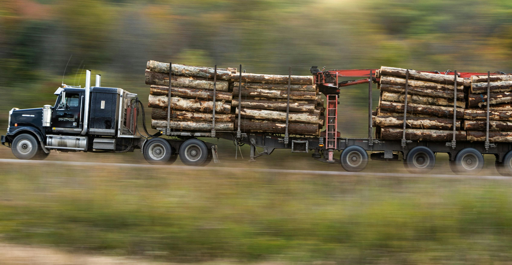

Our #1 Service
Heavy Haul Trucking St. George Utah
When you're moving loads that exceed standard legal weight or size limits, you need a carrier who knows the rules — and has the equipment and permits to do it right. That's exactly what we do.
Our heavy haul trucking service covers everything from single-axle heavy loads to multi-axle specialized transport. We handle all required Utah DOT oversize and overweight permits so you don't have to chase down paperwork.
- Overweight and oversize permit coordination
- Route surveys and planning for wide/tall loads
- Pilot car and escort services when required
- Lowboy, RGN, and step-deck trailer options
- Loads up to legal limits for Utah and Nevada routes
- Serving St. George, Cedar City, and Washington County